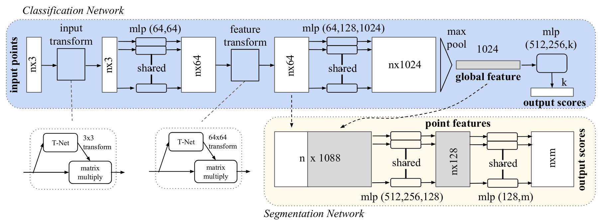
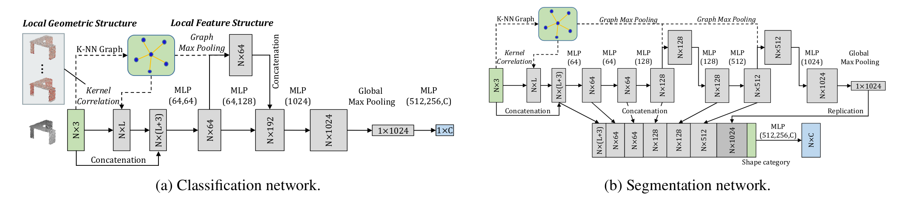

Crown Generation - 3D Point Cloud Models
This repository implements various deep learning models for processing 3D point clouds, focusing on tasks like classification and segmentation. Below is a summary of the models implemented and planned for this repository.
1. PointNet
PointNet is a deep learning architecture designed for directly processing 3D point clouds. It uses MLPs and symmetric functions to capture both local and global features from 3D data. This architecture is well-suited for tasks like 3D classification and segmentation.
- Paper: PointNet: Deep Learning on Point Sets for 3D Classification and Segmentation
- Current Implementation: Implemented for 3D teeth segmentation, focusing on direct feature extraction from point clouds.

2. PointNet++
PointNet++ builds upon PointNet by introducing hierarchical feature learning to capture features at multiple scales. It uses set abstraction layers and sampling techniques to represent fine-grained local structures.
- Paper: PointNet++: Deep Hierarchical Feature Learning on Point Sets in a Metric Space
- Current Implementation: Integrated for robust 3D segmentation and classification with enhanced local feature extraction.
- Future Enhancements:
- Multi-scale grouping (MSG)
- Multi-resolution grouping (MRG)

3. DynamicGraphCNN (DGCNN)
DynamicGraphCNN (DGCNN) is a graph-based network for point cloud processing. It dynamically constructs a graph in feature space and uses edge convolutions to learn geometric relationships between neighboring points.
- Paper: Dynamic Graph CNN for Learning on Point Clouds
- Current Implementation: Applied to segmentation using dynamic graphs and edge convolutions.
- Future Enhancements:
- Optimization for large-scale datasets
- Improved memory efficiency

4. Point Cloud Transformer (PCT)
PCT adapts the transformer architecture for 3D point clouds to enable global context modeling through self-attention mechanisms.
- Paper: PCT: Point Cloud Transformer
- Current Implementation: Integrated for segmentation tasks using attention-based feature extraction.

5. Mining Point Cloud
This module explores feature mining techniques in point clouds for improved segmentation/classification, including data augmentation, denoising, and sampling strategies.
- Paper: Mining Point Cloud Local Structures by Kernel Correlation and Graph Pooling
- Current Implementation: FoldingNet is used as a standalone feature extractor and integrated with the Spatial Transformer from the PointNet architecture.
